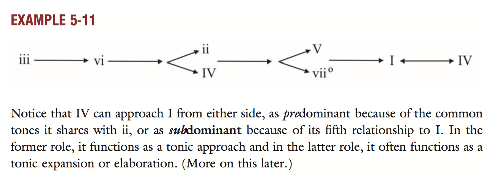

接下来的内容，主要参考了长期作为东京艺术大学标准教材的经典著作《和声》（和声―理論と実習），以及其后出版的新一代教材《新和声》（新しい和声──理論と聴感覚の統合）。

岛冈 让
音乐之友社

林 达也
Artes Publishing
当然，我们也参考了参考文献中列出的多部外文理论专著。
《和声》是一部三卷本的宏大理论书，极其详尽地阐述了古典派典型的声部行进与声音运动。由于书名直接就叫《和声》容易引起混淆，今后在提及此书时，我们取作者之名将其称为“岛冈和声”。 另一方面，《新和声》则是引入了符合国际通用标准和弦标记体系的后起新教材，全书共一卷。
正如上一篇所言，在深入探讨高难度的“和声学”细节之前，我们先从直接关乎古典风味呈现的“古典派样式”切入。这里我们尽量遵循本站和弦篇原有的知识顺序来介绍其风格特征，以便大家循序渐进地理解“在流行理论中是这样，但在古典派中则是这样”。
 1. 古典派大调的和弦体系
1. 古典派大调的和弦体系
正如前文所述，古典派对和弦进行的规则要求极其严格。我们首先来看看掌管古典派大调的基本和弦进行框架。

为了避免意图产生误解，这里作一点补充说明：例如虽然图中IIm与V之间没有直接画箭头，但它们是完全可以连接的。右上角的黑色箭头表示“S群（下属功能群）可以进行到D群（属功能群）中的任何和弦”。同理，VIm→IIm或VIm→V等也是允许的。不过在大调中连续出现两个小和弦，在实际作品中其实并不多见。汇总成表格如下：
| 原和弦 | 目标和弦 |
|---|---|
| I | 所有和弦 |
| IV | I、IIm、V |
| V | I、VIm |
| VIm | V、IV (极罕见情况下进IIm) |
| IIm | V |
归纳其与常规现代流行和弦理论的主要差异如下：
- 不使用在“连接系理论”中阐述过的各类反功能禁则
- 原则上不使用IIIm
- 不做三度上行
- IIm基本上只能进行到V
下面我们边补充边详细解释。
原则上不使用IIIm
在浪漫派及其后的作品中，IIIm的使用随处可见，但在古典派中，这个和弦的罕见程度令人惊讶。相比之下，它的近亲I/III（主和弦第一转位）受到了压倒性的青睐。
因此在和声学专著中，关于IIIm的处理篇幅极小，通常是在把转位形态和属七和弦彻底讲透之后，才像附赠品一样顺带稍微提一下。
不做三度上行
古典派以流丽顺畅的和弦运动为根本准则。像现代流行的 V→IIm 这种反向倒流进行自然是绝不可能出现的；此外在三度上行方面，即便是相对容易被接受的 I→IIIm、IV→VIm，在古典派中也基本被视为“弃用之物”[1]。
IIm的定位极其狭窄
在古典派中，IIm的角色非常有限，它几乎纯粹只充当在走向V之前的“蓄力踏板”。虽然存在IV-I这样的变格终止，但基本上不存在IIm-I这种运动。在某些理论体系中，不仅限于IIm→I，所有的二度下行都被视为弱进行。 另外对于VIm，也应当仅作为增添风味的调料来克制使用，绝不会进行大张旗鼓的渲染，以免听起来像进入了小调。
关于第VII个和弦
另外，自由派从基础和弦中剔除的VIIm(-5)（导三和弦），在古典派大调中也基本不单独使用，用途极为有限。
然而有趣的是，具有完全相同构成音的和弦，会以“省略了根音的V7”这种形式登场。

这类和弦被称为省略根音和弦（Rootless Chord）。包括岛冈和声在内的部分和声专著中，会采用在和弦级数数字上划斜线这一独特记号。这并不是“长得一样所以就当成一回事”，古典派的普遍共识是将其严格区分为“具有本质不同音乐涵义的和弦”。
因此在正统古典派理论书籍中，把III级和VII级和弦几乎视若无物、直接略过的写法比比皆是。在下一篇学习小调的风格样式之后，大家就会更深刻地理解忽视III和VII的根本原因了。
2. 古典派的功能分类
上面我们借助了T群（主功能）、D群（属功能）、S群（下属功能）的分组进行讲解，但这终究只是后世成型的“岛冈和声”等理论的归纳方法。对于古典派理论本身而言，TDS功能论在历史上属于“后置追加”的概念，莫扎特和贝多芬所生活的世界，根本还没有诞生现代的‘功能’这一概念。
20世纪以后的理论书籍固然会写入功能分类，但这终究是事后追认的归纳，且各家书籍依据的思想流派各有不同，因此本章原则上不过度深究这方面。
变格（Plagal）与前置属（Predominant）
顺便一提，在古典理论界，还存在着将功能划分为四种而非三种的思维流派。这本身非常有意思，也是深入思考功能理论时的重要视角，在此稍作介绍。
观察上面的和弦表格就会发现，IIm与IV在自由度与承担的角色上其实大相径庭。既然如此，把两者生硬地归入同一种功能（下属功能），是否有些勉强？将两者的角色明确区分开来，理论体系是否能更加严谨优美？产生这种思考也是理所当然的。
因此在《新和声》中，将像IIm这样置于属和弦之前的和弦称为前置属（Predominant）；而将像IV→I这样不经属和弦而直接回归主和弦的进行称为变格（Plagal），以此进行明确区分[2]。 换句话说，这种观念认为：功能并非单个和弦所绝对固有拥有的属性，而是取决于它与后继和弦关系的相对产物。
这种划分方式也并非该书独创，例如在《Theory for Today's Musician》一书中，就将“Predominant”与“Subdominant”作为两个完全独立的术语来使用，唯独将这里所说的“变格”称为“Subdominant”，而将Predominant视为完全不同的另一类存在。

摘自 Theory for Today’s Musician p72此外，“岛冈和声”的作者岛冈让先生在另一部著作中，也曾把属和弦称为“D1”，把这种“前置属”称为“D2”[3]。
正如我们多次提到的，TDS三功能学说往极端里说，不过是20世纪流行的一种理论模型而已。未来的100年里，标准或许还会再次改变。在本教程中，如果遇到有必要将二者区分开的情况，我们也会分别使用 PrD 和 Pg 这两种记号来进行区分。
3. 和弦的结构组合（和声汇聚 / Kadenz）
在梳理完分类之后，接下来就是将和弦组织成完整单元的工作。在岛冈和声中，将和弦进行的基本骨架称为和声汇聚（Kadenz），大致分为三类：
- K1 : T - D - T
- K2 : T - PrD - D - T
- K3 : T - Pg - T
取Kadenz的首字母“K”，分别称为K1、K2、K3。理论上常将其比喻为：如同单词串联成“句子（Sentence）”一样，和弦串联成“Kadenz”[4]。 这当然必须严格遵循前述的和弦进行规则，因此例如借K3之名写出 I - IV - VIm 这样的进行是绝对不允许的。
此外，虽说统称T，但原则上必须使用I级和弦；以VIm结尾的“伪终止（阻碍终止）”终究只是调味品，而且在一个宏大音乐乐段的开头，必须使用I级和弦以明确宣示本曲处于大调。
虽说时刻关注Kadenz被认为是写出结构严密乐曲的关键，但走到这一步、想必已经积累了丰富作曲经验的各位，即便不刻意去死记这个Kadenz的条条框框，也完全能够写出优秀动听的乐曲。
4. 借用和弦
在掌握了自然音阶和弦的基础之后，下一步就是从其他调借用和弦。**副属和弦（Secondary Dominant）**是古典派最重要的核心技法之一。正因为自然音体系受到了严格限制，能够增添色彩的副属和弦家族才显得格外弥足珍贵。

特别是重属和弦（II7 / DD），由于它能进一步增强大调的明朗辉煌感，因而深受作曲家们的极度宠爱。当然，借用这类和弦后必须遵循强进行（四度上行/五度下行）解决，像现代流行音乐中常见的 III7→IIm 或 II7→IV 之类的进行，在古典派中是绝不可能被允许的。
同主音小调借用（平行小调）
另一方面，来自同主音小调（Parallel Minor）的借用和弦在古典派大调中并不常使用。正如前面反复强调的，大调在古典派中要尽可能保持晴朗明媚。完全不使用同主音小调借用，反而更能淋漓尽致地彰显古典主义的纯正本色。
反之到了浪漫派时期，下属小和弦（小下属和弦 IVm）所蕴含的忧伤凄美与丰富的情感表达极为契合，因而被频繁采用；属小和弦（Vm）或♭VII也被广泛活用。
肖邦的《第二夜曲》与理查·施特劳斯的《查拉图斯特拉如是说》中对小下属和弦的运用，那种激越饱满的情感起伏，确实充满了浓郁的浪漫主义风范。
5. 七和弦与引申音（Tensions）
接下来是运用七和弦与九和弦来拓展音响，但这在古典派中也是受到严格限制的。特别是在管弦乐团这样的大编制中，导致声音浑浊的风险是极其巨大的。
而且从当时的审美潮流来看，人们更加崇尚清澈纯净的音色，因此在现代随处可见的大七和弦（Major Seventh）在当时很少被作为独立和弦使用。更确切地说，不用它们反而更能展现出古典派典雅利落的风骨。
然而，像V7和II7这样的属七和弦系列则是被铺天盖地广泛运用的，对于属七体系的和弦，叠置到九音也屡见不鲜。除此之外，其余声响通常仅限于在旋律运动中偶发产生，或是作为临时装饰音，这就是古典派的原则。
若说到将大七和弦作为特色凸显的经典艺术音乐作品，有埃里克·萨蒂的《裸体歌舞》（Gymnopédies）以及拉威尔的《水的嬉戏》（Jeux d'eau）等，但这些都已经是近代印象派时期的作品了。
如果想要营造纯正的古典派意境，除了属七和弦之外，其他和弦保持为质朴的三和弦，反而更容易营造出古雅高贵的韵味。
6. 斜线和弦（转位与低音设计）
构成古典音乐另一大鲜明特征的关键，是对斜线和弦（转位和弦）的大量运用。“转位形态”与“持续音（Pedal Point / 踏板音）”是理解古典派音乐的至关重要的关键词。
听完刚才严苛的和弦进行模式规则，大家可能会觉得自由度受到了极大束缚。然而，正是为了弥补这一限制，作曲家们才全力以赴地活用各种转位形态。

这是流行音乐中极常见的和弦进行示范。但在古典派中，首先没有IIIm，IIm→I也不被允许，V6基本也不会用。那该如何处理呢？

虽然只是细微的差异，但尤其是 V7/II 这类转位立刻散发出浓烈的古典优雅气息。正是这种微小声部处理的层层累积，成就了古典音乐独特的典雅质感。 因此前文虽然说“不使用三度上行”，但像 I → I/III 这样的转位运动是完全合情合理的。
7. 和弦进行的速度感
此外，古典派音乐的和弦变化是不规则且快速的。在流行音乐中，通常以一小节或两拍等固定周期来更换和弦，这是最基础的形态。
如果周期不规则，演奏者和听众都会感到手忙脚乱、应接不暇。但在古典音乐中，例如在管弦乐队中，是由形形色色的乐器共同交织出和声，当各乐器各自演奏其独立旋律线条时，和弦随着旋律运动而不断自然流变，这是非常普遍的现象。
像这样，从单个乐器的视角看，它只不过是在平稳地演奏自己的旋律线条，但交织的结果却在每一个音符上都激荡出截然不同的和声色彩。实际上，在古典派确立完备理论之前，“不是根据和弦来编排旋律”，而是“旋律交织叠置的结果诞生了和弦”——这种音乐观念一直占据统治地位。 因此，相较于现代流行音乐用和弦名称整齐划一地划分小节，古典派对和弦的理解是非常流动而灵活的。
所以不仅两拍一变很常见，一拍一变的和弦运动在古典派中也是司空见惯的常态。这在钢琴曲中也完全一致，例如在贝多芬《第八钢琴奏鸣曲“悲怆”》第一乐章末尾，就有一段以惊人速度飞速变换和弦并接连转调的绝美乐段。
即便和弦切换得如此频繁快速，听起来却依然感觉非常自然顺畅。这很大程度上归功于其底层遵循了清晰严谨的和弦连接逻辑，并且借助斜线和弦勾勒出了极其平滑流畅的低音线条。
前面提到的肖邦夜曲中，也出现了和弦瞬息万变的华丽乐句。
像这样，旋律始终保持着自然如歌的线条，而背后的和声则连绵不断地绽放出变幻莫测的色彩。这种“旋律与和声的高度浑然一体”，与在爵士乐中积极推进的“音阶与和弦的分离”构成了截然相反的两种美学维度。 像这样将快速流动的乐段与依靠持续音稳坐泰山的乐段相互交织、张弛有度，就能呈现出浓郁纯正的古典气质。
8. 节奏的特征
最后从节奏的维度来看。古典派是一个极其严格区分“正拍与反拍”、“强拍与弱拍”的音乐世界。例如“如果是弱拍，出现稍微浑浊的音尚可通融，但强拍必须绝对纯净严整”，深入剖析就会发现有着相当精细严苛的规则。
在旋律乐句的构思上，切分音（Syncopation）或先现音（Anticipation）等重音落在弱拍上的乐句出现频率，与流行音乐相比要低得多。在管弦乐中，由指挥家挥动指挥棒掌控节奏节拍的体系，或许也自然而然地促进了这种以正拍为核心的旋律构筑方式。
反之，如果一段旋律大量使用了切分音，在那个时代甚至会被乐评人特意拿出来大书特书“反拍节奏独具特色”。莫扎特的《第25交响曲》便是一个典型范例。
因此，如果你想要创作出格外端庄沉稳的古典风乐曲，不妨收敛平时习惯的流行乐旋律创作手法，尝试以正拍为核心的节奏框架来进行编配，定能营造出浓郁的高古典韵味。
至此我们粗略总结了古典派大调的风格特色，仅仅将上述要点付诸实践，就能营造出格外高雅庄重的古典意境。
这是基于以上内容尝试创作的一段古典风示例。虽然尚未融入正统“和声学”的声部写作技巧，但光是遵循“风格样式论”，就已经展现出了非同寻常的高贵格调。 尤其是“几乎不使用小和弦”以及“大量使用转位与持续音”这两点，带来了立竿见影的显著效果。
与现代的“舞曲”或“硬摇滚”等流派相比，古典派音乐中这种样式规范的重要性要大得多；无论音色音响模仿得多像，若缺乏了内在样式的支撑，听起来就完全不像真正的古典音乐。
此外，如果将这种独特的和弦连接风格适度融入到现代J-Pop等流行曲创作中，往往能碰撞出恰到好处的高级感与纵深感，非常值得大家尝试与借鉴。
这是摇滚乐队Quruli（くるり）全方位展现古典风貌的一张专辑中的一首歌曲。实际上在和弦进行中大量融入了古典派的写作样式，为整首乐曲的典雅意境奠定了坚实基础。据说这张专辑专程前往奥地利维也纳录制，真正沉浸在了古典主义的圣地氛围之中。
接下来我们要了解的是小调的风格样式。掌握了小调之后，古典派理论的精妙魅力将会更加清晰地展现在我们面前，让我们继续前进吧。
总结
- 在古典派大调中，为了凸显明朗高贵的基调，尤其是对小和弦的用法有着严格限制。
- 在古典派中，乐段始于主和弦、终于主和弦是绝对的基石，“半终止”与“伪终止（阻碍终止）”通常仅作为乐段中途的调味手段适度出现。
- 虽然基本和弦进行受到了严格约束，但作曲家们通过灵活运用斜线和弦（转位）与借用和弦，为音乐增添了无穷无尽的色彩。
- 在理解古典音乐的哲学时，彻底转换与创作现代流行音乐截然不同的思维方式，往往能事半功倍。